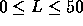

| Train Swapping |
At an old railway station, you may still encounter one of the last remaining ``train swappers''. A train swapper is an employee of the railroad, whose sole job it is to rearrange the carriages of trains.
Once the carriages are arranged in the optimal order, all the train driver has to do, is drop the carriages off, one by one, at the stations for which the load is meant.
The title ``train swapper'' stems from the first person who performed this task, at a station close to a railway bridge. Instead of opening up vertically, the bridge rotated around a pillar in the center of the river. After rotating the bridge 90 degrees, boats could pass left or right.
The first train swapper had discovered that the bridge could be operated with at most two carriages on it. By rotating the bridge 180 degrees, the carriages switched place, allowing him to rearrange the carriages (as a side effect, the carriages then faced the opposite direction, but train carriages can move either way, so who cares).
Now that almost all train swappers have died out, the railway company would like to automate their operation. Part of the program to be developed, is a routine which decides for a given train the least number of swaps of two adjacent carriages necessary to order the train. Your assignment is to create that routine.
The input contains on the first line the number of test cases (N). Each test case consists of two input lines. The first line of a test case contains an integer L, determining the length of the train (  ). The second line of a test case contains a permutation of the numbers 1 through L, indicating the current order of the carriages. The carriages should be ordered such that carriage 1 comes first, then 2, etc. with carriage L coming last.
For each test case output the sentence: 'Optimal train swapping takes S swaps.' where S is an integer.
3 3 1 3 2 4 4 3 2 1 2 2 1
Optimal train swapping takes 1 swaps. Optimal train swapping takes 6 swaps. Optimal train swapping takes 1 swaps.